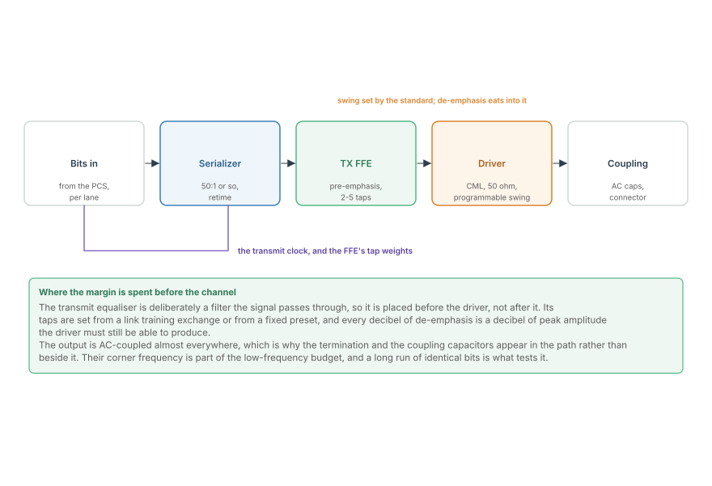
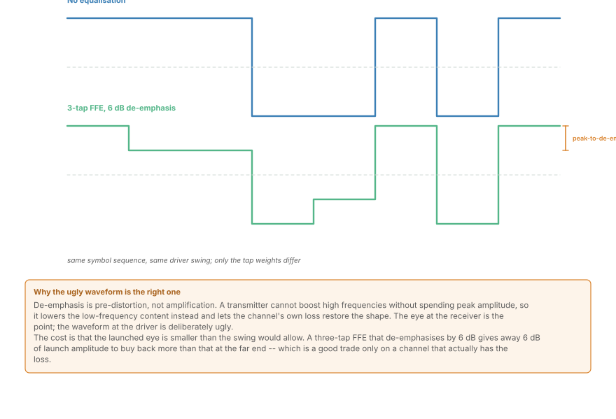
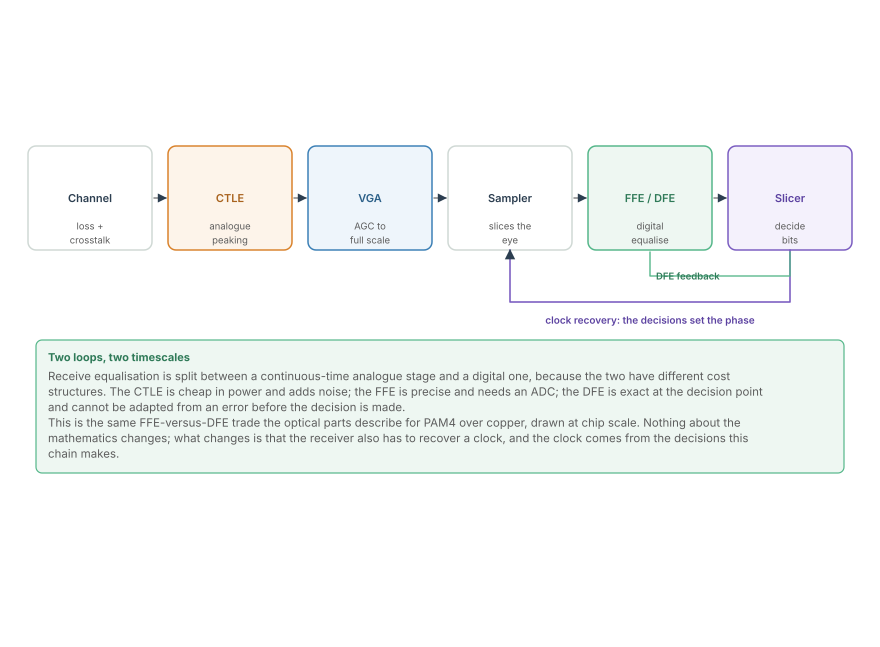
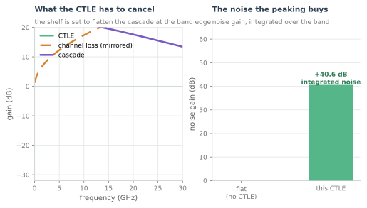
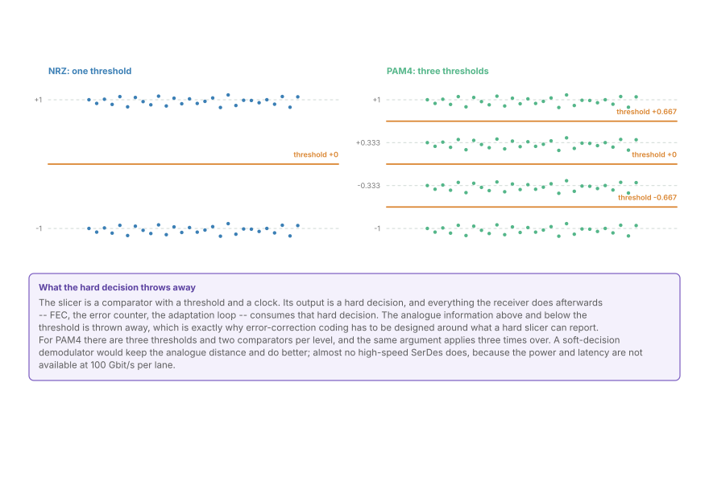
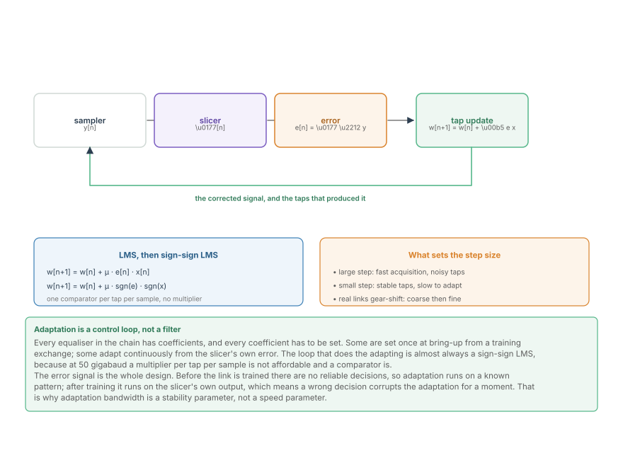

The Anatomy of a 100G Lane
Serializer to driver on the transmit side, CTLE to slicer on the receive side, and the four processing steps of the Ethernet part reappearing at chip scale.
A 100-gigabit serial lane is the smallest complete communications system in this course. It has a transmitter, a channel, a receiver, an equaliser, a clock recovery loop, and a decision device, and it does all of it in a few square millimetres of silicon at 50 gigabaud. Everything the Ethernet part described at board level appears here at chip scale, with the same four steps: prepare, cross, recover, decide.
The chapter takes the lane apart in the order the signal travels, because that order is also the order in which margin is spent.
The transmit side

The transmit path is short and every block in it is deliberate.
- The serializer takes a parallel word from the digital core and produces one bit stream at the baud rate. It is a shift register clocked at the line rate, and its timing is the transmitter's jitter floor: whatever the serializer's clock does appears directly on the line.
- The transmit FFE is the pre-distortion filter from the previous section of this course, but placed before the driver. Its job is to invert, in advance, some of the loss the channel is about to inflict. It is trained either from a fixed preset or from a back-channel exchange with the far-end receiver.
- The driver produces the actual voltage. It is a current-mode logic stage with a programmable swing and a controlled output impedance, and it is the block that sets the launched eye.
- AC coupling is almost always present, which is why a long run of identical bits matters: the coupling capacitors charge and the baseline moves underneath the signal.

The figure is the important idea. A transmit FFE does not amplify high frequencies; a driver has a fixed maximum swing and cannot exceed it. Instead, it de-emphasises the low frequencies -- a bit that repeats the previous bit is transmitted at reduced amplitude, and a bit that differs is transmitted at full amplitude. The channel's own low-pass response then restores the shape.
The cost is on the figure: the launched eye is smaller than the driver's swing would allow. A 6 dB de-emphasis gives away 6 dB of launch amplitude to buy more than that at the far end, which is a good trade only on a channel that actually has the loss.
The receive side

The receive path is longer, because this is where the margin has to be recovered.
- The CTLE -- a continuous-time linear equaliser -- is an analogue high-frequency shelf placed before the sampler. It is cheap in power and it runs at full rate with no clock, which is why it exists at all. It also amplifies the noise that lives at high frequency, which is its cost.

The figure is worth reading as two panels of one decision. The left panel shows the shelf rising to meet the channel's loss; the right panel shows what that costs. Peaking at high frequency amplifies the noise there, so a CTLE buys signal-to-noise ratio at low frequency and spends some of it back at high frequency. There is an optimum, and it is not the maximum peaking the circuit can produce.
- The VGA sets the signal into the sampler's full scale, exactly as the AGC does in the optical front end. It is the same ceiling-and-floor problem as Quantization, SNR and ENOB.
- The sampler is the analogue-to-digital boundary. Real SerDes use anywhere from one comparator to a small flash ADC per lane depending on how much digital equalisation follows.
- The receive FFE and DFE do the precise work, in the digital domain, where coefficients are exact.
- The slicer makes the decision, and the decisions feed back into the clock recovery loop.

The last figure is worth pausing on. The slicer is a comparator, and its output is one bit (or two, for PAM4) per symbol. Everything downstream -- the FEC, the error counter, the adaptation loops -- sees only that hard decision. The analogue distance that would tell you how close the decision was is discarded at this point, which is why error-correction coding in a SerDes has to be designed around a hard-decision metric.
One lane, two loops
Two feedback loops close around the receive chain, and they operate on different timescales.
The clock recovery loop runs from the slicer's decisions back to the sampler's clock phase. It is fast -- its bandwidth is in the megahertz -- and it must track the transmitter's wander while rejecting the noise on its own phase detector. The next chapter is about it.
The adaptation loops set the equaliser coefficients and the VGA gain. They are slower by design, because a coefficient that tracks too fast chases noise and a coefficient that tracks too slowly misses a temperature change. Adaptation is a control loop, not a filter, and its stability is a design parameter.

The figure shows the mechanism, and one detail is worth carrying forward: the update is almost always sign-sign LMS.
The reduction replaces two multiplications per tap per sample with two comparators, and at 50 gigabaud that is the difference between affordable and not. Its cost is a slower, noisier convergence, which is why real links gear-shift: a coarse step size during acquisition, a fine one afterwards.
Where this connects
- The lane is the Ethernet part's four steps at chip scale: prepare in the serializer and driver, cross in the channel, recover in the equaliser, decide in the slicer.
- The transmit FFE is pre-distortion; it spends launch amplitude to buy margin at the far end.
- The receive chain recovers margin in stages, each with a different cost -- the CTLE in power and noise, the FFE in precision, the DFE in latency.
- The slicer discards the analogue distance, which is why the FEC that follows sees hard decisions only.
- Adaptation is a control loop, and its bandwidth is a stability parameter rather than a speed setting.
In the optical link
This is the same receiver, at a different rate and in a different domain. The coherent front end of The Coherent Optical Receiver: A DSP Pipeline Tour has a CTLE-equivalent in its transimpedance amplifier, a VGA, an ADC array, a digital equaliser, and a slicer. The names differ; the sequence and the trade-offs do not.
One difference is fundamental: the optical receiver has no clock to recover from the data alone. A coherent receiver's symbol timing comes from a combination of the ADC clock and a digital timing recovery loop that operates on the sampled signal, not from an analogue phase interpolator locked to edges. That is why the optical part has no chapter equivalent to the CDR chapter here, and why timing recovery appears there as a DSP block rather than as a mixed-signal loop.
And the hard-decision argument is stronger in optics, not weaker. A coherent receiver's DSP already has more resolution than a SerDes sampler, so it could produce soft decisions cheaply -- and some do. But the power cost of carrying soft metrics through a 100+ GBd datapath is real, so most deployed coherent FEC is still hard-decision, exactly like the lane described here.